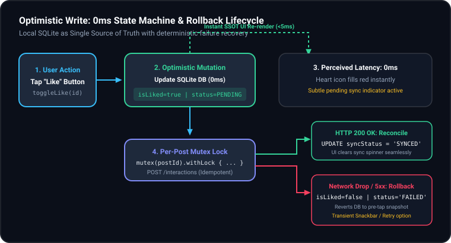
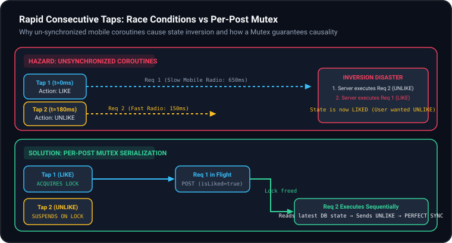

Optimistic Writes & Concurrency Control
Architecting 0ms Perceived Latency, Local Mutex Serialization, and Fault-Tolerant Distributed Sync (Flutter, React Native & Native)
⚡ The Zero-Latency Expectation
Mobile users expect instantaneous physical feedback when tapping interactive controls. Cellular latency and dropped packets must never degrade the tactile feel of the client application.
- Instant Gratification: Local UI flips state within one animation frame (<16ms).
- Local-First Storage: SQLite/Room acts as the durable buffer and Single Source of Truth (SSOT).
- Flickering Connectivity: Subway commutes, elevators, and cell tower handoffs require resilient background sync.
🏛️ The 4 Pillars of Optimistic Sync
- Durable State Machine: Persistent
SYNCED,PENDING, andFAILEDrow markers. - Per-Entity Concurrency Control: Mutex locks serialized per ID to eliminate out-of-order race conditions.
- Compensating Rollbacks: Deterministic rollback to pre-tap state upon terminal network failure.
- Distributed Idempotency: Client-generated Snowflake
requestIdenforcing Last-Write-Wins (LWW).
Pessimistic vs. Optimistic UI Updates
Why waiting for cellular round trips destroys social feed engagement and how optimistic execution works
⏳ Pessimistic UI (The Spinner Trap)
The application treats the remote server as the immediate gatekeeper for visual feedback.
- User Tap: Like button triggers a network call and shows a loading spinner.
- Round-Trip Delay: 250ms–1500ms cellular latency freezes the interactive flow.
- Offline Failure: If connectivity drops, the interaction fails immediately without recording intent.
- Result: Clunky, laggy user perception; feels broken in subways and elevators.
🚀 Optimistic UI (0ms Response)
The application assumes network success, mutating local persistent storage instantly.
- Instant Update (<5ms): Local database row updated; UI observes changes via reactive Stream/Flow.
- Asynchronous Sync: Radio packet dispatched in the background with retry policies.
- Silent Reconciliation: Server response acknowledges the transaction and transitions status to
SYNCED. - Result: Silky smooth 120Hz feel; user experiences zero perceived network lag.
The 3-Tier State Machine Lifecycle
Durable persistence in SQLite (Room) ensures transitions survive process death and background execution
📊 SQLite Schema Evolution
Adding durable tracking fields via database migration:
// Room Migration(1, 2)
val MIGRATION_1_2 = object : Migration(1, 2) {
override fun migrate(db: SupportSQLiteDatabase) {
db.execSQL(
"ALTER TABLE posts ADD COLUMN isLiked INTEGER NOT NULL DEFAULT 0"
)
db.execSQL(
"ALTER TABLE posts ADD COLUMN syncStatus TEXT NOT NULL DEFAULT 'SYNCED'"
)
}
}SYNCED: State is identically mirrored on client and server.PENDING: Optimistic mutation applied locally; network in flight.FAILED: Network retries exhausted; requires rollback or retry cue.

The Rapid-Tap State Inversion Bug
How mobile radio jitter causes out-of-order network arrival and inverts user intent
💥 The Async Race Breakdown
- t = 0ms: User taps "Like". Coroutine #1 launched with payload
{ action: "LIKE" }. - t = 180ms: User changes mind, taps "Unlike". Coroutine #2 launched with
{ action: "UNLIKE" }. - Variable Radio Latency: Mobile packets take different routing hops over 5G/LTE towers.
- Arrival Inversion: Server receives
UNLIKEfirst, then receivesLIKE400ms later. - State Disaster: The client UI thinks the post is unliked, but the backend database is permanently Liked!
⚠️ Why Debouncing is NOT the Solution
Engineers frequently suggest debounce(300ms) to solve this. Here is why that fails in production:
- Debounce Drops Gestures: Debouncing ignores the subsequent tap. But the second tap had the opposite semantic intent (Unlike vs Like)!
- Delayed Perceived Feedback: Waiting 300ms before taking action destroys the zero-latency promise.
- What We Need: We must process every intentional toggle, but execute them in strict causal FIFO sequence.
Per-Post Mutex Serialization
Eliminating race conditions without freezing concurrent feed interactions
🔒 Repository Implementation
class FeedRepositoryImpl @Inject constructor(...) {
// Thread-safe lock registry keyed by entity ID
private val postLocks = ConcurrentHashMap<String, Mutex>()
suspend fun toggleLike(postId: String) {
val mutex = postLocks.computeIfAbsent(postId) { Mutex() }
// Cooperative suspension: does not block threads
mutex.withLock {
// 1. Capture snapshot for potential rollback
val current = postDao.getPostById(postId) ?: return
val nextLiked = !current.isLiked
// 2. Optimistic 0ms DB write
postDao.updateLikeStatus(postId, nextLiked, "PENDING")
// 3. Serialized network dispatch
executeNetworkSync(postId, nextLiked, current.isLiked)
}
}
}
Subway Resilience: Backoff & Jitter
Distributing network recovery without overwhelming backend microservices
📈 Exponential Backoff with Full Jitter
When entering cellular dead zones, immediate retries only drain device battery and amplify radio strain:
suspend fun <T> retryWithBackoff(
maxAttempts: Int = 3,
initialDelayMs: Long = 1000L,
block: suspend () -> T
): Result<T> {
var currentDelay = initialDelayMs
for (attempt in 1..maxAttempts) {
try {
return Result.success(block())
} catch (e: Exception) {
if (attempt == maxAttempts) return Result.failure(e)
// Full jitter prevents coordinated retry stampedes
val jitter = Random.nextLong(0, currentDelay)
delay(currentDelay + jitter)
currentDelay *= 2
}
}
return Result.failure(IllegalStateException())
}🔄 Coroutine vs. WorkManager Strategy
- Transient Reactions (Likes/Reactions): Handled in repository coroutine scope. If network fails after 3 quick attempts, roll back immediately so the UI reflects reality.
- Heavyweight Mutations (Posts/Drafts/Comments): Enqueued in SQLite Outbox table and handed to Android
WorkManager/ iOSBGProcessingTask. - Survival Guarantees: WorkManager guarantees execution even if the user swipes away the application or the device restarts.
Compensating Transactions & Rollback UX
Restoring single-source truth gracefully without disorienting the user
↩️ The Atomic Rollback Pattern
// If all network attempts fail:
val result = retryWithBackoff { api.likePost(postId) }
result.onFailure {
// Revert DB to pre-tap snapshot
postDao.updateLikeStatus(
postId = postId,
isLiked = previousSnapshot.isLiked,
syncStatus = "FAILED"
)
// Emit non-blocking one-shot UI event
_uiEvents.emit(UiEvent.ShowSnackbar("Failed to sync like. Reverted."))
}- Automatic Reversion: Room re-emits the reverted row; Compose UI rolls back automatically.
- Audit Trail: Marking status
FAILEDprevents ghost state on next app launch.
🎨 Non-Blocking UX Guidelines
- No Modal Popups: Never interrupt reading with a modal dialogue for a secondary reaction failure.
- Subtle Reversion Animation: Heart icon de-saturates or un-fills with a subtle haptic pulse.
- Transient Snackbar: Provide an optional "Retry" action in a non-blocking snackbar at the bottom of the screen.
- Visual State Indicator: A tiny offline badge on posts with pending/failed mutations gives power users full visibility.
Multi-Device Conflicts & Idempotency
Enforcing Last-Write-Wins (LWW) across multiple mobile clients and offline queues
🆔 Snowflake Idempotency Keys
When a subway network packet is retransmitted, the server must never double-count the mutation:
- Client-Generated
requestId: Generated once at mutation time (e.g.req_8f93a1...). - Server Deduplication Table: Redis cache stores recent request IDs for 24 hours. Duplicate requests return cached 200 OK without re-applying business logic.
- Safe Retries: Network timeouts can be retried 10 times safely without incrementing like counters 10 times.
⚖️ Last-Write-Wins (LWW) Resolution
Resolving race conditions when Phone and Tablet mutate the same post while offline:
- The Rule: The mutation with the latest authoritative timestamp prevails.
- The Catch: Never use local device clock (revisit Phase 2 Clock-Skew)! A phone set to 2099 would permanently override all future writes.
- The Solution: Monotonic time offset against server UTC (
ServerTimeProvider) ensures fair, chronological ordering.
Universal Mobile Implementation Blueprint
How Native Android, iOS Swift, Flutter, and React Native implement this pattern
📱 Native Stacks
Android:
// Keyed Mutex with Room SSOT
val lock = mutexMap.computeIfAbsent(id) { Mutex() }
lock.withLock {
db.postDao().update(id, isLiked = true, "PENDING")
api.syncLike(id)
}iOS (Swift 6 Concurrency):
// Swift Actor natively serializes state
actor PostSyncActor {
func toggleLike(id: String) async throws { ... }
}⚡ Cross-Platform Stacks
Flutter (Dart):
// package:synchronized Lock
final lock = _locks.putIfAbsent(id, () => Lock());
await lock.synchronized(() async {
await driftDb.updateLike(id, liked: true);
await dio.post('/api/like');
});React Native:
// Redux Toolkit / TanStack Query Optimistic
queryClient.setQueryData(['post', id], (old) => ({ ...old, isLiked: true }));The 5 Golden Rules & Interview Rubric
Master these principles to ace the High-Level Architecture & Deep-Dive rounds
🏆 The 5 Golden Rules
- 1. Local DB is First & Final Truth: UI observes SQLite/Room; never bind directly to network responses.
- 2. Per-Entity Lock Granularity: Serialize using
Mutex(postId); never use global locks that freeze other posts. - 3. Persistent State Machine: Keep
syncStatusin SQLite so background workers know what's un-synced after process death. - 4. Idempotency on Every Write: Tag payloads with a Snowflake
requestIdso network retries never duplicate mutations. - 5. Silent Compensation: On terminal failure, rollback database state cleanly and notify the user with non-intrusive feedback.
Questions & Discussion
Ready to mock interview this deep-dive topic or explore conflict resolution nuances.